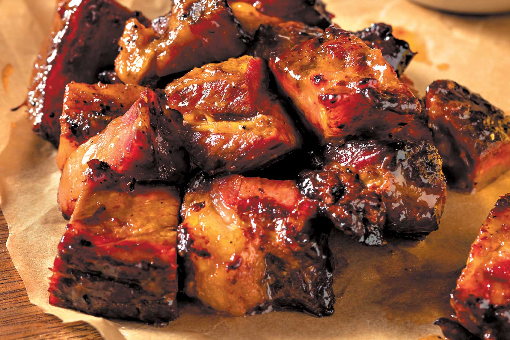
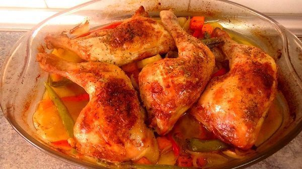

Picante a la Tacneña
El picante a la tacneña es un plato emblemático de la cocina de Tacna. Se prepara con carne de res, la cual se cocina en una salsa espesa hecha de ají amarillo, cebolla, ajo y especias. Este guiso se sirve generalmente acompañado de arroz y papas sancochadas, y a menudo se adorna con aceitunas.

Chicharrón
El chicharrón es un delicioso plato que consiste en trozos de cerdo fritos hasta que la piel queda crujiente y dorada. Su textura crujiente y su sabor jugoso lo convierten en una opción popular para acompañar con yuca o papas, además de una salsa de ají que realza su sabor. Es ideal como aperitivo o plato principal.

Tallarín al pesto
Los tallarines al pesto son una pasta deliciosa que se mezcla con una salsa de pesto hecha a base de albahaca fresca, ajo, nueces y aceite de oliva. Esta combinación crea un plato lleno de frescura y sabor. Se puede servir con queso parmesano rallado por encima y es perfecto para cualquier ocasión.

Pollo al horno
El pollo al horno es un plato clásico que se prepara marinando el pollo en una mezcla de especias, ajo y hierbas, y luego cocinándolo lentamente en el horno. El resultado es un pollo jugoso y tierno con una piel dorada y crujiente. Se puede acompañar con papas asadas y verduras al vapor para una comida completa y deliciosa.

Pollo asado
El pollo asado es un plato muy popular y sabroso que consiste en un pollo marinado en una mezcla de especias, ajo, limón y hierbas. Se cocina lentamente en el horno o a la parrilla, lo que resulta en una piel dorada y crujiente, mientras que la carne se mantiene jugosa y tierna. Este plato se suele servir con papas al horno o ensalada, y es perfecto para reuniones familiares y celebraciones.
